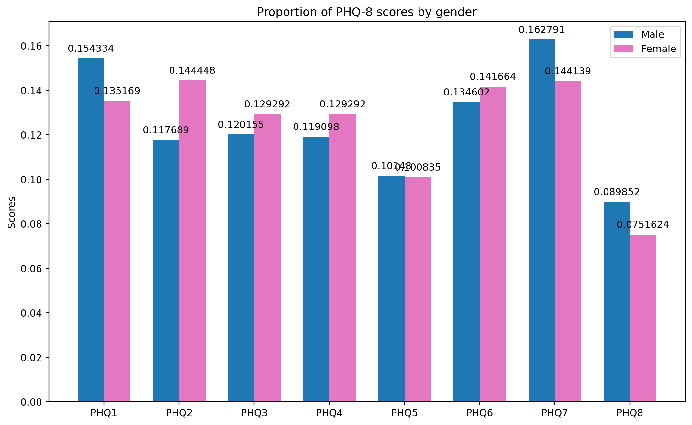
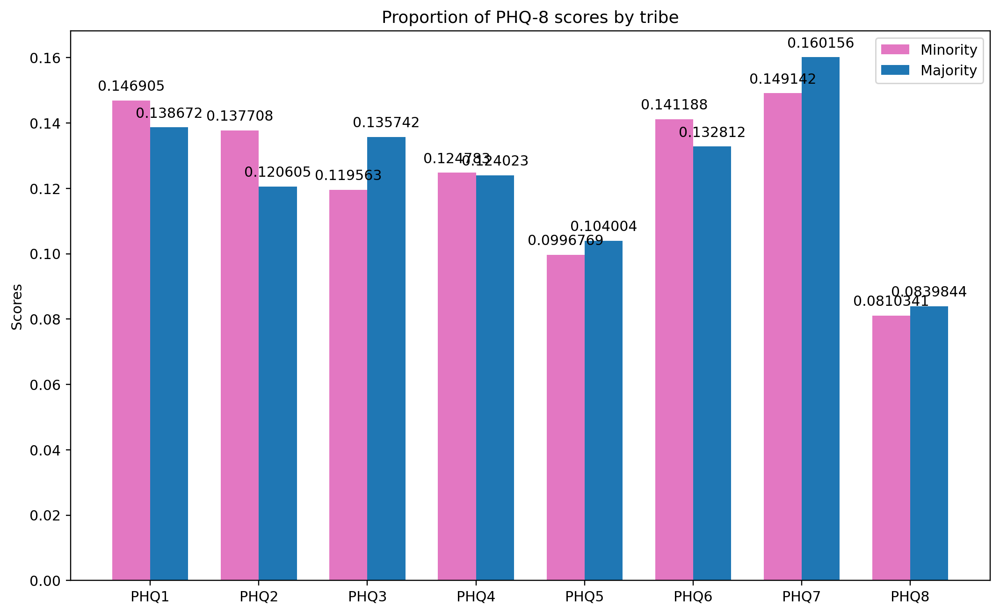
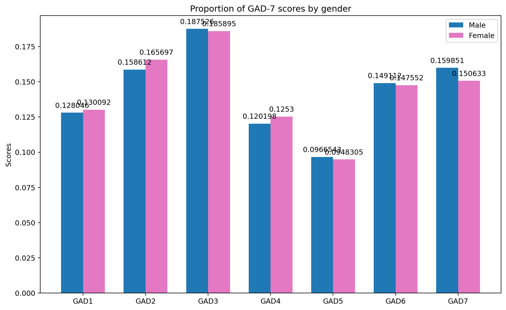
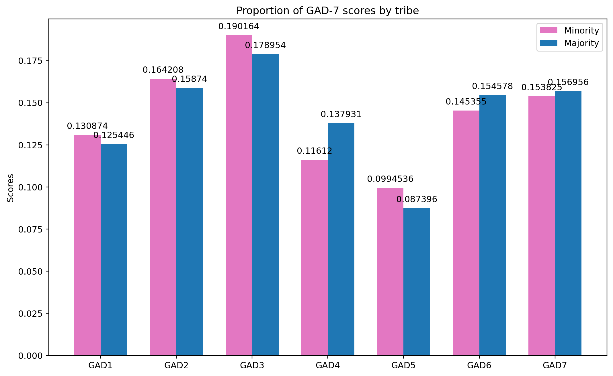

#install and/or upgrade packages
!pip install pandas seaborn pandas-profilingDefaulting to user installation because normal site-packages is not writeable
Requirement already satisfied: pandas in /home/DsF/.local/lib/python3.10/site-packages (1.5.2)
Requirement already satisfied: seaborn in /home/DsF/.local/lib/python3.10/site-packages (0.12.2)
Requirement already satisfied: pandas-profiling in /home/DsF/.local/lib/python3.10/site-packages (3.6.2)
Requirement already satisfied: numpy>=1.21.0 in /usr/lib/python3/dist-packages (from pandas) (1.23.5)
Requirement already satisfied: python-dateutil>=2.8.1 in /usr/lib/python3/dist-packages (from pandas) (2.8.2)
Requirement already satisfied: pytz>=2020.1 in /usr/lib/python3/dist-packages (from pandas) (2022.7)
Requirement already satisfied: matplotlib!=3.6.1,>=3.1 in /usr/lib/python3/dist-packages (from seaborn) (3.5.2)
Requirement already satisfied: visions[type_image_path]==0.7.5 in /home/DsF/.local/lib/python3.10/site-packages (from pandas-profiling) (0.7.5)
Requirement already satisfied: multimethod<1.10,>=1.4 in /home/DsF/.local/lib/python3.10/site-packages (from pandas-profiling) (1.9.1)
Requirement already satisfied: scipy<1.10,>=1.4.1 in /usr/lib/python3/dist-packages (from pandas-profiling) (1.8.1)
Requirement already satisfied: jinja2<3.2,>=2.11.1 in /usr/lib/python3/dist-packages (from pandas-profiling) (3.0.3)
Requirement already satisfied: phik<0.13,>=0.11.1 in /home/DsF/.local/lib/python3.10/site-packages (from pandas-profiling) (0.12.3)
Requirement already satisfied: pydantic<1.11,>=1.8.1 in /usr/lib/python3/dist-packages (from pandas-profiling) (1.10.2)
Requirement already satisfied: htmlmin==0.1.12 in /home/DsF/.local/lib/python3.10/site-packages (from pandas-profiling) (0.1.12)
Requirement already satisfied: tqdm<4.65,>=4.48.2 in /usr/lib/python3/dist-packages (from pandas-profiling) (4.64.0)
Requirement already satisfied: typeguard<2.14,>=2.13.2 in /home/DsF/.local/lib/python3.10/site-packages (from pandas-profiling) (2.13.3)
Requirement already satisfied: PyYAML<6.1,>=5.0.0 in /usr/lib/python3/dist-packages (from pandas-profiling) (6.0)
Requirement already satisfied: requests<2.29,>=2.24.0 in /usr/lib/python3/dist-packages (from pandas-profiling) (2.28.1)
Requirement already satisfied: statsmodels<0.14,>=0.13.2 in /home/DsF/.local/lib/python3.10/site-packages (from pandas-profiling) (0.13.5)
Requirement already satisfied: attrs>=19.3.0 in /usr/lib/python3/dist-packages (from visions[type_image_path]==0.7.5->pandas-profiling) (22.1.0)
Requirement already satisfied: tangled-up-in-unicode>=0.0.4 in /home/DsF/.local/lib/python3.10/site-packages (from visions[type_image_path]==0.7.5->pandas-profiling) (0.2.0)
Requirement already satisfied: networkx>=2.4 in /home/DsF/.local/lib/python3.10/site-packages (from visions[type_image_path]==0.7.5->pandas-profiling) (3.0)
Requirement already satisfied: Pillow in /usr/lib/python3/dist-packages (from visions[type_image_path]==0.7.5->pandas-profiling) (9.3.0)
Requirement already satisfied: imagehash in /home/DsF/.local/lib/python3.10/site-packages (from visions[type_image_path]==0.7.5->pandas-profiling) (4.3.1)
Requirement already satisfied: joblib>=0.14.1 in /home/DsF/.local/lib/python3.10/site-packages (from phik<0.13,>=0.11.1->pandas-profiling) (1.2.0)
Requirement already satisfied: packaging>=21.3 in /usr/lib/python3/dist-packages (from statsmodels<0.14,>=0.13.2->pandas-profiling) (21.3)
Requirement already satisfied: patsy>=0.5.2 in /home/DsF/.local/lib/python3.10/site-packages (from statsmodels<0.14,>=0.13.2->pandas-profiling) (0.5.3)
Requirement already satisfied: six in /usr/lib/python3/dist-packages (from patsy>=0.5.2->statsmodels<0.14,>=0.13.2->pandas-profiling) (1.16.0)
Requirement already satisfied: PyWavelets in /home/DsF/.local/lib/python3.10/site-packages (from imagehash->visions[type_image_path]==0.7.5->pandas-profiling) (1.4.1)
#imports
import warnings
warnings.simplefilter(action='ignore', category=FutureWarning)
warnings.filterwarnings(action='ignore')
import numpy as np
import pandas as pd
import seaborn as sns
import matplotlib.pyplot as plt
import pandas_profiling
from random import randint
from os import path
from contextlib import suppress
%load_ext autoreload
%autoreload 2
%reload_ext autoreload
%matplotlib inlineautomate, as much as possible, the process of creating visualisations
#template no. 1
#default blue
default_blue = sns.color_palette('tab10')[0]
#default orange
default_orange = sns.color_palette('tab10')[1]
#default pink
default_pink = sns.color_palette('tab10')[6]
#default palette
default_palette = sns.color_palette('tab10')#template no. 2
'''
Simple function to create `Figure` object
using matplotlib. Has an x-lab, y-lab and
title.
"Father Figure", if you like :)
3 params, all type `str`:
@x_lab: x label
@y_lab: y label
@title: title
return: None
'''
def create_fig(x_lab: str, y_lab: str, title: str):
"""Father Figure"""
try:
plt.figure(figsize=(10, 6.18), dpi=216, frameon=False, clear=False)
plt.xlabel(x_lab)
plt.ylabel(y_lab)
plt.title(title)
except ModuleNotFoundError:
print(f'Please `import matplotlib.pyplot as plt` and try again')
except:
print(f'Failed to create template')
raise#template no. 3
'''
Simple function to create `Figure` object
using matplotlib for sub-plots.
"Father Figure", for sub-plots :)
2 params, type `int`; number of sub-plots:
@n_row: #rows
@n_col: #cols
return: fig and ax objects
'''
def create_sub(n_row: int=1, n_col: int=1):
"""Father Figure for sub-plots"""
try:
fig, ax = plt.subplots(n_row, n_col, figsize=(10, 6.18), dpi=216)
fig.tight_layout(pad=10.0)
return fig, ax
except ModuleNotFoundError:
print(f'Please `import matplotlib.pyplot as plt` and try again')
except:
print(f'Failed to create template')
raise#confirm that a df exists
'''
Simple function to see if a df exists
1 param: name of variable holding the df
Do not pass the arg as a string.
Repeat: DO NOT pass the arg as a string.
return: None
'''
def confirm_df_exists(df):
"""confirm that a df exists"""
if not df.empty:
print(f'This dataframe exists')
return
print(f'This dataframe does not exist')#confirm that a file exists and/or has been
# created in current dir
'''
simple function to confirm that a file exists
and/or has been created in current dir
1 param, type `str`: name of file
@file_name: name of file
return None
'''
def confirm_file_exists(file_name: str):
"""confirm that file exists"""
if path.exists(file_name):
print(f'File exists')
else:
print(f'Something went wrong. Investigate')#group data and find mean
'''
Function to calculate mean of
grouped data
Takes in 2 args:
@var_1 -> variable to average by
@var_2 -> variable to access data by
Both args must be columns of a pandas DF
return: average of grouped data
'''
def group_avg(var_1, var_2):
""" function group_avg"""
if var_1 and var_2:
avg_gp_data = df.groupby(var_1)[var_2].mean()
return avg_gp_data
else:
print(f'Check that both arguments are columns of a pandas DF and try again')
#group data and find sum
'''
Function to calculate sum of
grouped data
Takes in 2 args
@var_1 -> variable to sum by
@var_2 -> variable to access data by
Both args must be columns of a pandas DF
return: sum of grouped data
'''
def group_sum(var_1, var_2):
""" function group_sum"""
if var_1 and var_2:
sum_gp_data = df.groupby(var_1)[var_2].sum()
return sum_gp_data
else:
print(f'Check that both arguments are columns of a pandas DF and try again')
#sorting ops
'''
function to create and sort a DF
3 params:
@x: pandas series #1
@y: pandas series #2
@ascending: bool, default T
return: pandas DF
'''
def custom_sort_df(x, y, ascending:bool=True):
"""function custom_sort_df"""
try:
dd = pd.DataFrame({k:v for (k, v) in zip(x, y)}, index=['Count']).transpose()
dd.sort_values('Count', inplace=True, ascending=True)
dd.reset_index(inplace=True)
return dd
except:
print(f'Check that x and y are pandas series and try again')'''
simple function to create a sum super set
1 param, type `str`:
@search_term: the term to search
return: pandas df
'''
def create_sum_super_set(search_term: str):
""" create_sum_super_set"""
li = [i for i in df.columns if i.startswith(search_term)]
sum_dict = {}
for i in range(len(li)):
sum_grp = group_sum(li[i], li[i])
li_di = dict(sum_grp)
sum_dict[li[i]] = li_di
df_sum_dict = pd.DataFrame(sum_dict)
return df_sum_dict'''
simple function to create an average super set
1 param, type `str`:
@search_term: the term to search
return: pandas df
'''
def create_average_super_set(search_term: str):
""" create_average_super_set"""
li = [i for i in df.columns if i.startswith(search_term)]
avg_dict = {}
for i in range(len(li)):
avg_grp = group_avg(li[i], li[i])
li_di = dict(avg_grp)
avg_dict[li[i]] = li_di
df_avg_dict = pd.DataFrame(avg_dict)
return df_avg_dict'''
Simple function to sum the scores of
a particular metric
2 params, type `str`:
@var_1 -> ...
@var_2 -> ...
return: pandas df
'''
def create_sum_metric(var_1: str, var_2: str):
""" create_sum_metric"""
li = [i for i in df.columns if i.startswith(var_2)]
avg_dict = {}
for i in range(len(li)):
avg_grp = group_sum(var_1, li[i])
li_di = dict(avg_grp)
avg_dict[li[i]] = li_di
df_avg_dict = pd.DataFrame(avg_dict).style.format('{:2f}')
return df_avg_dictdf = pd.read_csv('shamiri_imputed_dataset.csv', sep=',')
confirm_df_exists(df)This dataframe exists
df.shape(658, 33)df.duplicated().value_counts()False 658
dtype: int64df.drop_duplicates()
df.info()<class 'pandas.core.frame.DataFrame'>
RangeIndex: 658 entries, 0 to 657
Data columns (total 33 columns):
# Column Non-Null Count Dtype
--- ------ -------------- -----
0 ParticipantID 658 non-null object
1 PHQ1 658 non-null int64
2 PHQ2 658 non-null int64
3 PHQ3 658 non-null int64
4 PHQ4 658 non-null int64
5 PHQ5 658 non-null int64
6 PHQ6 658 non-null int64
7 PHQ7 658 non-null int64
8 PHQ8 658 non-null int64
9 GAD1 658 non-null int64
10 GAD2 658 non-null int64
11 GAD3 658 non-null int64
12 GAD4 658 non-null int64
13 GAD5 658 non-null int64
14 GAD6 658 non-null int64
15 GAD7 658 non-null int64
16 MSSS1 658 non-null int64
17 MSSS2 658 non-null int64
18 MSSS3 658 non-null int64
19 MSSS4 658 non-null int64
20 MSSS5 658 non-null int64
21 MSSS6 658 non-null int64
22 MSSS7 658 non-null int64
23 MSSS8 658 non-null int64
24 MSSS9 658 non-null int64
25 MSSS10 658 non-null int64
26 MSSS11 658 non-null int64
27 MSSS12 658 non-null int64
28 Tribe 658 non-null object
29 Gender 658 non-null object
30 School 658 non-null object
31 Age 658 non-null float64
32 School_Resources 658 non-null object
dtypes: float64(1), int64(27), object(5)
memory usage: 169.8+ KB
df.ParticipantID.nunique()626df.sample(randint(5, 15))| ParticipantID | PHQ1 | PHQ2 | PHQ3 | PHQ4 | PHQ5 | PHQ6 | PHQ7 | PHQ8 | GAD1 | ... | MSSS8 | MSSS9 | MSSS10 | MSSS11 | MSSS12 | Tribe | Gender | School | Age | School_Resources | |
|---|---|---|---|---|---|---|---|---|---|---|---|---|---|---|---|---|---|---|---|---|---|
| 137 | EH_058 | 0 | 1 | 0 | 0 | 0 | 2 | 0 | 2 | 0 | ... | 7 | 4 | 6 | 7 | 4 | Minority | F | Elite | 17.0 | Poor |
| 572 | OLY_127 | 1 | 0 | 0 | 1 | 2 | 0 | 2 | 0 | 2 | ... | 2 | 3 | 2 | 3 | 3 | Minority | F | Olympic | 14.0 | Medium |
| 470 | OLY_025 | 1 | 1 | 2 | 1 | 0 | 1 | 0 | 0 | 0 | ... | 2 | 1 | 5 | 6 | 5 | Minority | M | Olympic | 14.0 | Medium |
| 430 | AGHS_142 | 2 | 1 | 1 | 2 | 0 | 1 | 1 | 3 | 1 | ... | 4 | 6 | 6 | 4 | 5 | Majority | F | AGHS | 15.0 | Rich |
| 520 | OLY_075 | 1 | 0 | 0 | 3 | 0 | 0 | 2 | 0 | 0 | ... | 7 | 7 | 7 | 7 | 7 | Minority | F | Olympic | 16.0 | Medium |
| 620 | OLY_175 | 2 | 3 | 1 | 0 | 1 | 1 | 1 | 1 | 0 | ... | 6 | 6 | 6 | 6 | 6 | Minority | M | Olympic | 17.0 | Medium |
| 271 | AHS_115 | 3 | 0 | 0 | 3 | 1 | 1 | 3 | 3 | 2 | ... | 1 | 5 | 3 | 1 | 4 | Majority | M | AHS | 17.0 | Rich |
| 120 | EH_041 | 2 | 2 | 2 | 2 | 2 | 3 | 2 | 2 | 2 | ... | 6 | 3 | 7 | 4 | 2 | Minority | M | Elite | 16.0 | Poor |
8 rows × 33 columns
intfloatstrdf has no missing or null valuesdf has no duplicated observationsPHQ-8 scores?
sum_phq = create_sum_super_set('PHQ')
sum_phq| PHQ1 | PHQ2 | PHQ3 | PHQ4 | PHQ5 | PHQ6 | PHQ7 | PHQ8 | |
|---|---|---|---|---|---|---|---|---|
| 0 | 0.0 | 0.0 | 0 | 0.0 | 0.0 | 0.0 | 0.0 | 0.0 |
| 1 | 251.0 | 207.0 | 163 | 234.0 | 157.0 | 194.0 | 231.0 | 153.0 |
| 2 | 198.0 | 204.0 | 192 | 252.0 | 136.0 | 154.0 | 190.0 | 150.0 |
| 3 | 426.0 | 390.0 | 396 | 270.0 | 321.0 | 492.0 | 507.0 | 195.0 |
| 4 | NaN | NaN | 8 | NaN | NaN | NaN | NaN | NaN |
avg_phq = create_average_super_set('PHQ')
avg_phq| PHQ1 | PHQ2 | PHQ3 | PHQ4 | PHQ5 | PHQ6 | PHQ7 | PHQ8 | |
|---|---|---|---|---|---|---|---|---|
| 0 | 0.0 | 0.0 | 0.0 | 0.0 | 0.0 | 0.0 | 0.0 | 0.0 |
| 1 | 1.0 | 1.0 | 1.0 | 1.0 | 1.0 | 1.0 | 1.0 | 1.0 |
| 2 | 2.0 | 2.0 | 2.0 | 2.0 | 2.0 | 2.0 | 2.0 | 2.0 |
| 3 | 3.0 | 3.0 | 3.0 | 3.0 | 3.0 | 3.0 | 3.0 | 3.0 |
| 4 | NaN | NaN | 4.0 | NaN | NaN | NaN | NaN | NaN |
aa = create_sum_metric('Gender', 'PHQ')
# a = create_percentage_df(aa)
# a = a.transpose()
aa = aa.transpose()
ab = [i/ aa['F'].sum() for i in aa['F']]
ac = [i/ aa['M'].sum() for i in aa['M']]
ad = pd.DataFrame([ab, ac], index=['Female', 'Male'], columns=aa.transpose().columns).transpose()
ad
x = ad.index.values[:]
y1 = ad.values[0:8,0]
y2 = ad.values[0:8,1]
lab1 = [f'{i*100:.2f}%' for i in y1]
lab2 = [f'{i*100:.2f}%' for i in y2]
# create_fig('', '', 'PHQ Score')
# plt.bar(x, y1, color=default_pink)
# plt.bar(x, y2, color=default_blue)
labels = x
i = np.arange(len(labels))
width = 0.35
fig, ax = create_sub()
rects1 = ax.bar(i - width/2, y2, width, label='Male', color=default_blue)
rects2 = ax.bar(i + width/2, y1, width, label='Female', color=default_pink)
ax.set_ylabel('Scores')
ax.set_title('Proportion of PHQ-8 scores by gender')
ax.set_xticks(i, labels)
ax.bar_label(rects1, padding=5)
ax.bar_label(rects2, padding=5)
ax.legend()
fig.tight_layout();
PHQ1,
PHQ5, PHQ6, PHQ7and
PHQ8PHQ2,
PHQ3 and PHQ4aa = create_sum_metric('Tribe', 'PHQ')
# a = create_percentage_df(aa)
# a = a.transpose()
aa = aa.transpose()
ab = [i/ aa['Majority'].sum() for i in aa['Majority']]
ac = [i/ aa['Minority'].sum() for i in aa['Minority']]
ad = pd.DataFrame([ab, ac], index=['Majority', 'Minority'], columns=aa.transpose().columns).transpose()
ad
x = ad.index.values[:]
y1 = ad.values[0:8,0]
y2 = ad.values[0:8,1]
lab1 = [f'{i*100:.2f}%' for i in y1]
lab2 = [f'{i*100:.2f}%' for i in y2]
# create_fig('', '', 'PHQ Score')
# plt.bar(x, y1, color=default_pink)
# plt.bar(x, y2, color=default_blue)
labels = x
i = np.arange(len(labels))
width = 0.35
fig, ax = create_sub()
rects1 = ax.bar(i - width/2, y2, width, label='Minority', color=default_pink)
rects2 = ax.bar(i + width/2, y1, width, label='Majority', color=default_blue)
ax.set_ylabel('Scores')
ax.set_title('Proportion of PHQ-8 scores by tribe')
ax.set_xticks(i, labels)
ax.bar_label(rects1, padding=5)
ax.bar_label(rects2, padding=5)
ax.legend()
fig.tight_layout();
PHQ1, PHQ2, PHQ4, and
PHQ6PHQ3, PHQ5 PHQ7and
PHQ8li = [i for i in df.columns if i.startswith('PHQ')]
su = df[li]
su = su.sum(axis=1)
bins = [0, 5, 10, 15, 20, 24]
su_cu = su.value_counts(bins=bins, normalize=True).to_frame().style.format('{:.2%}')
# su_cu = pd.DataFrame(su_cu)
su_cu| 0 | |
|---|---|
| (5.0, 10.0] | 34.50% |
| (-0.001, 5.0] | 27.36% |
| (10.0, 15.0] | 25.38% |
| (15.0, 20.0] | 10.33% |
| (20.0, 24.0] | 2.43% |
GAD-7 scores?
sum_gad = create_sum_super_set('GAD')
sum_gad| GAD1 | GAD2 | GAD3 | GAD4 | GAD5 | GAD6 | GAD7 | |
|---|---|---|---|---|---|---|---|
| 0 | 0 | 0 | 0 | 0 | 0 | 0 | 0 |
| 1 | 239 | 198 | 213 | 176 | 141 | 237 | 186 |
| 2 | 196 | 202 | 208 | 148 | 190 | 150 | 206 |
| 3 | 255 | 468 | 576 | 333 | 180 | 405 | 435 |
avg_gad = create_average_super_set('GAD')
avg_gad| GAD1 | GAD2 | GAD3 | GAD4 | GAD5 | GAD6 | GAD7 | |
|---|---|---|---|---|---|---|---|
| 0 | 0.0 | 0.0 | 0.0 | 0.0 | 0.0 | 0.0 | 0.0 |
| 1 | 1.0 | 1.0 | 1.0 | 1.0 | 1.0 | 1.0 | 1.0 |
| 2 | 2.0 | 2.0 | 2.0 | 2.0 | 2.0 | 2.0 | 2.0 |
| 3 | 3.0 | 3.0 | 3.0 | 3.0 | 3.0 | 3.0 | 3.0 |
aa = create_sum_metric('Gender', 'GAD')
# a = create_percentage_df(aa)
# a = a.transpose()
aa = aa.transpose()
ab = [i/ aa['F'].sum() for i in aa['F']]
ac = [i/ aa['M'].sum() for i in aa['M']]
ad = pd.DataFrame([ab, ac], index=['Female', 'Male'], columns=aa.transpose().columns).transpose()
ad
x = ad.index.values[:]
y1 = ad.values[0:8,0]
y2 = ad.values[0:8,1]
lab1 = [f'{i*100:.2f}%' for i in y1]
lab2 = [f'{i*100:.2f}%' for i in y2]
# create_fig('', '', 'PHQ Score')
# plt.bar(x, y1, color=default_pink)
# plt.bar(x, y2, color=default_blue)
labels = x
i = np.arange(len(labels))
width = 0.35
fig, ax = create_sub()
rects1 = ax.bar(i - width/2, y2, width, label='Male', color=default_blue)
rects2 = ax.bar(i + width/2, y1, width, label='Female', color=default_pink)
ax.set_ylabel('Scores')
ax.set_title('Proportion of GAD-7 scores by gender')
ax.set_xticks(i, labels)
ax.bar_label(rects1, padding=5)
ax.bar_label(rects2, padding=5)
ax.legend()
fig.tight_layout();
GAD3,
GAD5, GAD6 and GAD7GAD1,
GAD2 and GAD4aa = create_sum_metric('Tribe', 'GAD')
# a = create_percentage_df(aa)
# a = a.transpose()
aa = aa.transpose()
ab = [i/ aa['Majority'].sum() for i in aa['Majority']]
ac = [i/ aa['Minority'].sum() for i in aa['Minority']]
ad = pd.DataFrame([ab, ac], index=['Majority', 'Minority'], columns=aa.transpose().columns).transpose()
ad
x = ad.index.values[:]
y1 = ad.values[0:8,0]
y2 = ad.values[0:8,1]
lab1 = [f'{i*100:.2f}%' for i in y1]
lab2 = [f'{i*100:.2f}%' for i in y2]
# create_fig('', '', 'PHQ Score')
# plt.bar(x, y1, color=default_pink)
# plt.bar(x, y2, color=default_blue)
labels = x
i = np.arange(len(labels))
width = 0.35
fig, ax = create_sub()
rects1 = ax.bar(i - width/2, y2, width, label='Minority', color=default_pink)
rects2 = ax.bar(i + width/2, y1, width, label='Majority', color=default_blue)
ax.set_ylabel('Scores')
ax.set_title('Proportion of GAD-7 scores by tribe')
ax.set_xticks(i, labels)
ax.bar_label(rects1, padding=5)
ax.bar_label(rects2, padding=5)
ax.legend()
fig.tight_layout();
GAD1, GAD2, GAD3, and
GAD5GAD4, GAD6 and GAD7li = [i for i in df.columns if i.startswith('GAD')]
su_gad = df[li]
su_gad = su_gad.sum(axis=1)
bins = [0, 5, 10, 15, 21]
su_cu_gad = su_gad.value_counts(bins=bins, normalize=True).to_frame().style.format('{:.2%}')
su_cu_gad| 0 | |
|---|---|
| (-0.001, 5.0] | 35.11% |
| (5.0, 10.0] | 33.59% |
| (10.0, 15.0] | 22.04% |
| (15.0, 21.0] | 9.27% |
MPSS-12 scores?
sum_mpss = create_sum_super_set('MSSS')
sum_mpss| MSSS1 | MSSS2 | MSSS3 | MSSS4 | MSSS5 | MSSS6 | MSSS7 | MSSS8 | MSSS9 | MSSS10 | MSSS11 | MSSS12 | |
|---|---|---|---|---|---|---|---|---|---|---|---|---|
| 1 | 40.0 | 48.0 | 23.0 | 39.0 | 41.0 | 54.0 | 71.0 | 63.0 | 49.0 | 48 | 31.0 | 79.0 |
| 2 | 110.0 | 106.0 | 50.0 | 88.0 | 90.0 | 104.0 | 190.0 | 122.0 | 106.0 | 118 | 68.0 | 164.0 |
| 3 | 123.0 | 93.0 | 72.0 | 102.0 | 90.0 | 174.0 | 153.0 | 102.0 | 141.0 | 117 | 105.0 | 192.0 |
| 4 | 204.0 | 176.0 | 132.0 | 184.0 | 260.0 | 400.0 | 348.0 | 260.0 | 260.0 | 224 | 224.0 | 336.0 |
| 5 | 535.0 | 470.0 | 250.0 | 530.0 | 410.0 | 795.0 | 710.0 | 550.0 | 690.0 | 405 | 410.0 | 775.0 |
| 6 | 1146.0 | 1254.0 | 1218.0 | 1050.0 | 1056.0 | 1044.0 | 876.0 | 966.0 | 1164.0 | 882 | 1152.0 | 816.0 |
| 7 | 1211.0 | 1253.0 | 2100.0 | 1498.0 | 1533.0 | 427.0 | 462.0 | 1148.0 | 784.0 | 1589 | 1596.0 | 406.0 |
| 8 | NaN | NaN | NaN | NaN | NaN | NaN | NaN | NaN | NaN | 8 | NaN | NaN |
avg_mpss = create_average_super_set('MSSS')
avg_mpss| MSSS1 | MSSS2 | MSSS3 | MSSS4 | MSSS5 | MSSS6 | MSSS7 | MSSS8 | MSSS9 | MSSS10 | MSSS11 | MSSS12 | |
|---|---|---|---|---|---|---|---|---|---|---|---|---|
| 1 | 1.0 | 1.0 | 1.0 | 1.0 | 1.0 | 1.0 | 1.0 | 1.0 | 1.0 | 1.0 | 1.0 | 1.0 |
| 2 | 2.0 | 2.0 | 2.0 | 2.0 | 2.0 | 2.0 | 2.0 | 2.0 | 2.0 | 2.0 | 2.0 | 2.0 |
| 3 | 3.0 | 3.0 | 3.0 | 3.0 | 3.0 | 3.0 | 3.0 | 3.0 | 3.0 | 3.0 | 3.0 | 3.0 |
| 4 | 4.0 | 4.0 | 4.0 | 4.0 | 4.0 | 4.0 | 4.0 | 4.0 | 4.0 | 4.0 | 4.0 | 4.0 |
| 5 | 5.0 | 5.0 | 5.0 | 5.0 | 5.0 | 5.0 | 5.0 | 5.0 | 5.0 | 5.0 | 5.0 | 5.0 |
| 6 | 6.0 | 6.0 | 6.0 | 6.0 | 6.0 | 6.0 | 6.0 | 6.0 | 6.0 | 6.0 | 6.0 | 6.0 |
| 7 | 7.0 | 7.0 | 7.0 | 7.0 | 7.0 | 7.0 | 7.0 | 7.0 | 7.0 | 7.0 | 7.0 | 7.0 |
| 8 | NaN | NaN | NaN | NaN | NaN | NaN | NaN | NaN | NaN | 8.0 | NaN | NaN |
li = [i for i in df.columns if i.startswith('MSS') and i.endswith(('S1', 'S2', '5', '10'))]
su_mpss = df[li]
su_mpss = su_mpss.sum(axis=1).apply(lambda x : x/4)
su_cu_mpss = su_mpss.value_counts(bins=4, normalize=True).to_frame().style.format('{:.2%}')
su_cu_mpss| 0 | |
|---|---|
| (5.5, 7.0] | 48.18% |
| (4.0, 5.5] | 27.81% |
| (2.5, 4.0] | 16.41% |
| (0.993, 2.5] | 7.60% |
li = [i for i in df.columns if i.startswith('MSS') and i.endswith(('3', '4', '8', '11'))]
su_mpss = df[li]
su_mpss = su_mpss.sum(axis=1).apply(lambda x : x/4)
su_cu_mpss = su_mpss.value_counts(bins=4, normalize=True).to_frame().style.format('{:.2%}')
su_cu_mpss| 0 | |
|---|---|
| (5.5, 7.0] | 55.02% |
| (4.0, 5.5] | 25.38% |
| (2.5, 4.0] | 12.77% |
| (0.993, 2.5] | 6.84% |
li = [i for i in df.columns if i.startswith('MSS') and i.endswith(('6', '7', '9', '12'))]
su_mpss = df[li]
su_mpss = su_mpss.sum(axis=1).apply(lambda x : x/4)
su_cu_mpss = su_mpss.value_counts(bins=4, normalize=True).to_frame().style.format('{:.2%}')
su_cu_mpss| 0 | |
|---|---|
| (4.0, 5.5] | 40.58% |
| (2.5, 4.0] | 24.47% |
| (5.5, 7.0] | 22.80% |
| (0.993, 2.5] | 12.16% |
27.36% of participants scored below 5
34.5% between 5 and 10
25.5% between 10 and 15
10.33% between 15 and 20
and 2.43% above 20
Proportion of males that scored higher in each question of PHQ test is higher in 5 out of 8 questions
Proportion of females that scored higher in each question of PHQ test is higher in 3 out of 8 questions
Males scored higher in questions PHQ1,
PHQ5, PHQ6, PHQ7and
PHQ8
Females scored higher in questions PHQ2,
PHQ3 and PHQ4
Proportion of participants belonging to minority tribes that scored higher in each question of PHQ test is higher in 4 out of 8 questions
Proportion of participants belonging to majority tribes that scored higher in each question of PHQ test is higher in 4 out of 8 questions
Participants belonging to minority tribes scored higher in
questions PHQ1, PHQ2, PHQ4, and
PHQ6
Participants belonging to majority tribes scored higher in
questions PHQ3, PHQ5 PHQ7and
PHQ8
35.11% of participants scored below 5
33.59% between 5 and 10
22.04% between 10 and 15
and 9.27% above 15
Proportion of males that scored higher in each question of GAD test is higher in 4 out of 7 questions
Proportion of females that scored higher in each question of PHQ test is higher in 3 out of 7 questions
Males scored higher in questions GAD3,
GAD5, GAD6 and GAD7
Females scored higher in questions GAD1,
GAD2 and GAD4
Proportion of participants belonging to minority tribes that scored higher in each question of GAD test is higher in 4 out of 7 questions
Proportion of participants belonging to majority tribes that scored higher in each question of GAD test is higher in 3 out of 7 questions
Participants belonging to minority tribes scored higher in
questions GAD1, GAD2, GAD3, and
GAD5
Participants belonging to majority tribes scored higher in
questions GAD4, GAD6 and GAD7
7.6% of participants scored below 2.5
16.41% between 2.55 and 4
27.81% between 4 and 5.5
and 48.18% above 5.5
6.84% of participants scored below 2.5
12.77% between 2.55 and 4
25.38% between 4 and 5.5
and 55.02% above 5.5
12.16% of participants scored below 2.5
24.47% between 2.55 and 4
40.58% between 4 and 5.5
and 22.8% above 5.5
MPSS1, 2, 5 and 10 and
MPSS3, 4, 8 and 11 are the only exceptions
from subprocess import call
call(['python', '-m', 'nbconvert', 'exploration.html'])